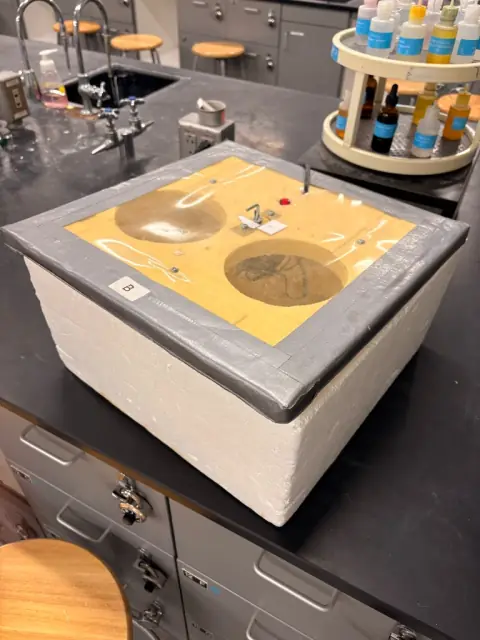

30 °C growth capsule
Insulated chamber with viewing ports, power entry, and indicator, paired with a resistive heat path (e.g. Kanthal-class wire) and closed-loop control once the temperature controller stage is integrated.
Waterproof bench tanks and IP-rated project boxes under evaluation for wet testing (see references).
